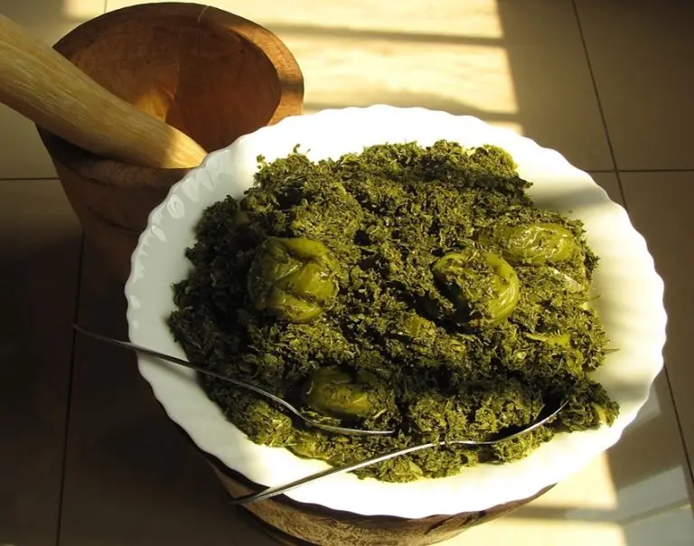
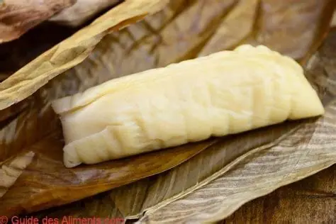
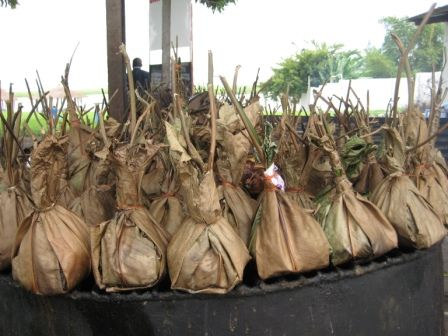
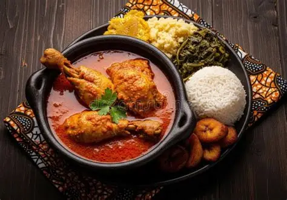

Saka-Saka
A popular dish prepared from pounded cassava leaves, often cooked with palm oil, fish, and local seasonings.
Discover the rich culinary heritage of the Republic of the Congo. From the traditional flavors of Saka-Saka and Chikwangue to the unique preparation of Maboke, explore the dishes, ingredients, and traditions that make Congolese cuisine special.
Explore Our Traditional FoodsFood is an important part of everyday life and cultural identity in the Republic of the Congo. Across the country, families prepare traditional meals using locally available ingredients such as cassava, plantains, maize, peanuts, and palm products. Cooking methods and recipes vary between communities, reflecting local resources and traditions. This website introduces visitors to popular Congolese dishes and the agricultural products behind them.

A popular dish prepared from pounded cassava leaves, often cooked with palm oil, fish, and local seasonings.

A traditional cassava food made from fermented cassava paste, wrapped in leaves and served with many Congolese meals.

Seasoned fish wrapped in leaves and slowly cooked, creating a flavorful dish enjoyed throughout the country.

Chicken prepared with a rich palm nut sauce and served with rice, cassava, or plantains.

Agriculture plays an important role in food production and everyday life in the Republic of the Congo.
Cassava is one of the country's major crops and is consumed in different forms including chikwangue, fufu, and cooked cassava roots.
Other important crops include maize, peanuts, plantains, and oil palm. These products provide ingredients for many traditional meals and support livelihoods across the country.
Every traditional dish tells a story about culture, family, and local food production. Do you have a favorite Congolese dish or a traditional recipe to share? We would love to hear from you.
Share Your Thoughts